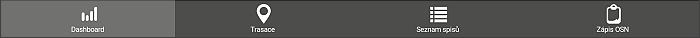

Hlavní menu aplikace
Aplikace je rozdělena na čtyři základní části:
Dashboard - základní obrazovka s rychlým přehledem informací o spisech inspektora.
Trasace - základní obrazovka s trasou osobních návštěv pro vybraný den.
Seznam spisů - přehled všech spisů inspektora se všemi detailními informacemi.
Zápis OSN - dialog pro vytvoření zápisu z osobní návštěvy u klienta.
Přechod do jednotlivých částí se provádí pomocí hlavního menu, které je umístěno pod každou obrazovkou (kromě rozpracovaného zápisu OSN)
